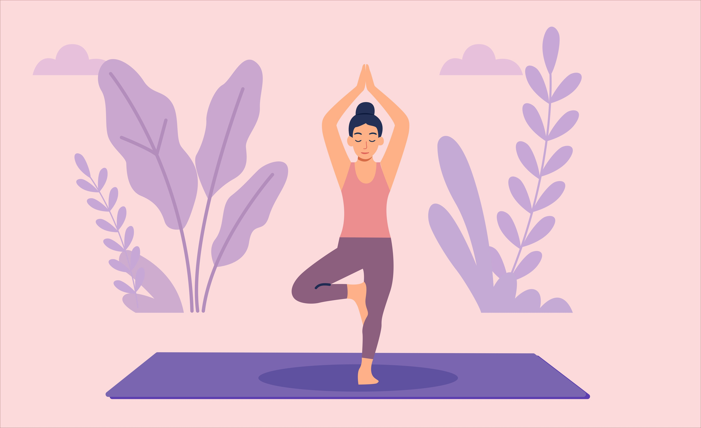

Taking care of mental health is an important part of maintaining overall
well-being. There are many simple strategies that young people can use to
manage stress and improve their mental health.
While these strategies may not solve every problem, they can help people feel
more balanced and better able to cope with everyday challenges.
Healthy habits that support mental wellbeing

Getting enough sleep each night
Maintaining a balanced and healthy diet
Regular physical activity or exercise
Taking breaks from work or study
Talk to someone you trust
Seek support if the problem continues
Ways to manage stress
Practising relaxation techniques such as deep breathing
Organising tasks and managing time effectively
Talking to someone you trust about your feelings
Reducing excessive screen time and social media use
Participating in hobbies or activities you enjoy
If stress or emotional difficulties continue for a long period of time,
seeking support from a teacher, counsellor, or healthcare professional
can be helpful.